2. Understanding the Trade-offs: Data Preparation for Spatial Accessibility Analysis
Source:vignettes/data-prep.Rmd
data-prep.RmdThe Raster Approach: Understanding the Trade-offs
When working with spatial accessibility analysis, one of the first
decisions is how to represent spatial data. The spax
package takes a raster-based approach (at least for now), representing
space as a grid of regular cells rather than points and polygons. This
fundamental choice shapes everything from memory usage to computational
methods.
Memory vs. Computational Simplicity
Let’s be upfront about the costs and benefits. Raster representations typically require more memory than their vector counterparts:
# Compare memory usage between vector and raster isochrones
vec_size <- object_size(hos_iscvec)/1024^2
rast_size <- object_size(hos_iscr)/1024^2
cat("Memory usage comparison:\n",
sprintf("Vector isochrones: %.1f MB\n", vec_size),
sprintf("Raster isochrones: %.1f MB\n", rast_size),
sprintf("Memory increase factor: %.1fx\n", rast_size/vec_size))
#> Memory usage comparison:
#> Vector isochrones: 5.9 MB
#> Raster isochrones: 194.0 MB
#> Memory increase factor: 32.7xAs we can see, raster isochrones are 32.7 times larger than vector isochrones*. So, why accept this memory overhead? The benefits come down to algorithmic simplicity and computational consistency:
*Note: The actual memory increase factor may vary depending on the resolution and complexity of the raster data.
1. Computational Efficiency
Raster operations translate directly into matrix operations, which modern computers are highly optimized to handle. Instead of complex geometric calculations, we’re essentially doing math on a grid:
# Simple example:
# 1. Calculate areas within 30 minutes of a facility
# 2. Calculate Gaussian distance decay with an SD of 30 minutes
# 3. Calculate Exponential distance decay with a decay rate of 0.05
distance_raster <- rast(hos_iscr)[[1]] # Travel time to first facility
# Set grid
par(mfrow = c(2, 2))
# Distance raster
plot(distance_raster, main = "Travel Time to Hospital C1 (minutes)")
plot(vect(hc12_hos[1,]), add = TRUE, col = "red", pch = 16)
plot(vect(bound0), add = TRUE)
# Area within 30 minutes
within_30min <- distance_raster <= 30 # Simple logical operation
plot(within_30min, main = "Area within 30 minutes")
plot(vect(hc12_hos[1,]), add = TRUE, col = "red", pch = 16)
plot(vect(bound0), add = TRUE)
# Gaussian decay
gaussian_decay <- exp(-0.5 * (distance_raster / 30)^2) #
plot(gaussian_decay, main = "Gaussian Distance Decay")
plot(vect(hc12_hos[1,]), add = TRUE, col = "red", pch = 16)
plot(vect(bound0), add = TRUE)
# Exponential decay
exponential_decay <- exp(-0.05 * distance_raster)
plot(exponential_decay, main = "Exponential Distance Decay")
plot(vect(hc12_hos[1,]), add = TRUE, col = "red", pch = 16)
plot(vect(bound0), add = TRUE)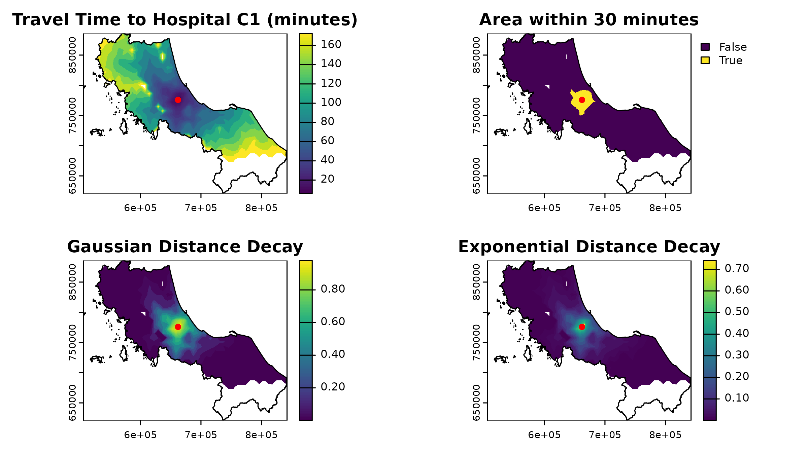
2. Data Structure Consistency
Almost everything - population, travel times, accessibility scores - lives in the same format (maybe except supply-demand ratio calulation that performs as a vector). This eliminates the need to convert between different spatial representations:
# Show how different components share the same structure
par(mfrow = c(1, 3))
# Population density
plot(rast(u5pd), main = "Population")
# Travel time
plot(distance_raster, main = "Travel Time")
# Result will have same structure
plot(within_30min, main = "Analysis Result")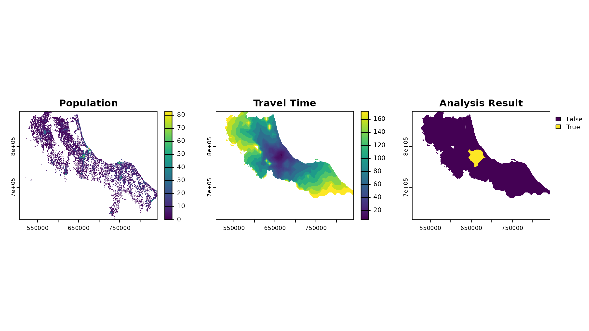
When to Consider Alternatives
The raster approach isn’t always optimal. Consider vector-based methods when:
- Your study area is very sparse with few service locations
- You need exact precision at specific points
- Memory is severely constrained and you’re working with a large area
- The granularity of your analysis doesn’t require a continuous surface
Data Preparation for Accessibility Analysis
“Give me six hours to chop down a tree, and I will spend the first four sharpening the axe.”
— Often attributed to Abraham Lincoln
Dealing with Demand
When preparing demand data for spatial accessibility analysis, we have several approaches available, each with its own assumptions and trade-offs. Let’s explore these methods using a simple example of disease cases by district.
set.seed(42) # For reproducibility
# Example district-level case data
case_data <- tibble(
ADM1_PCODE = bound1$ADM1_PCODE,
cases = round(rnorm(nrow(bound1), 1000, 200)) # Simulated disease cases
)
# Join with spatial data
case_spatial <- bound1 %>%
left_join(case_data, by = "ADM1_PCODE")In a vector-based approach, we typically represent each area with a polygon that has an attribute for the number of cases. This often results in choropleth maps, like this:
# Plot the case
ggplot() +
geom_sf(data = bound1) +
geom_sf(data = case_spatial, aes(fill = cases)) +
labs(title = "Cases by Province") +
scale_fill_viridis_b()+
theme_minimal()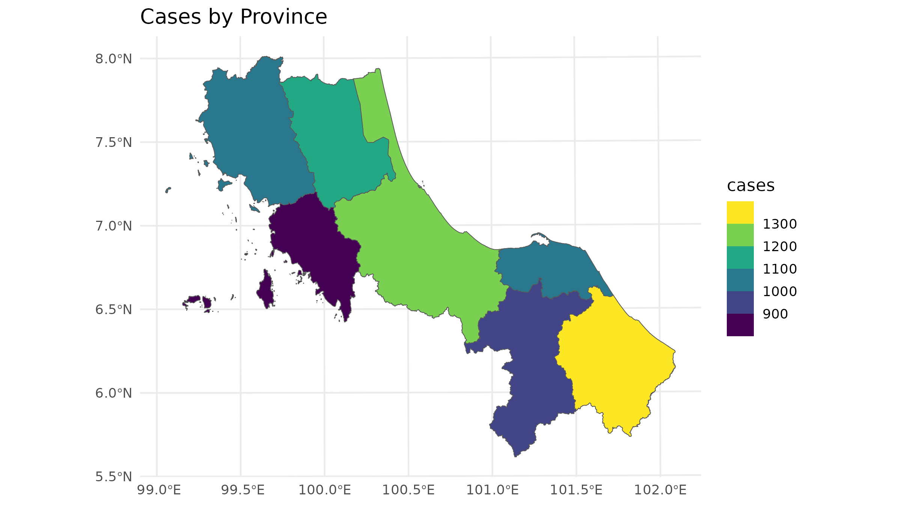
But that could sometimes be misleading as when performing spatial analysis; we often allocate demand to only at the centroid of each area, like this:
# Calculate centroids and rasterize
centroids <- st_centroid(case_spatial)
#> Warning: st_centroid assumes attributes are constant over geometries
# Plot the population data
ggplot() +
geom_sf(data = bound1) +
geom_sf(data = centroids, aes(size = cases), col = "red") +
labs(title = "Population Data by Region") +
theme_minimal()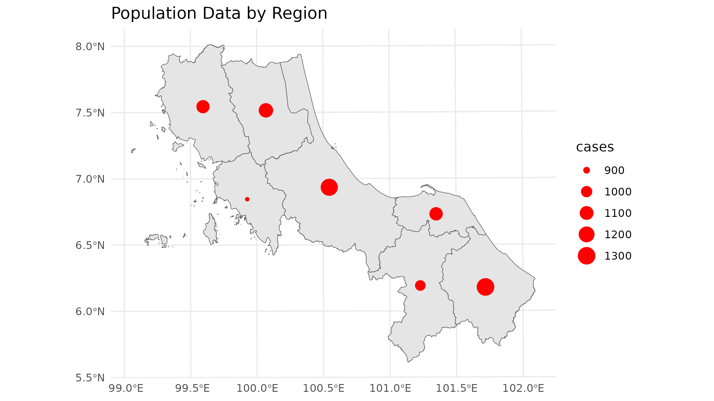
and then we proceed to estimate the pair distance between each centroid-facility pair to calculate the decay weight and accessibility score.
Now, let’s see how we can deal with the demand in a raster-centric method.
1. Centroid-Based Approach
The simplest approach treats all demand as concentrated at area centroids. This mirrors traditional vector-based accessibility analyses:
# Create template raster - Coarser resolution for example
template <- aggregate(rast(u5pd), fact = 10)
# Rasterize centroids
centroid_demand <- terra::rasterize(
vect(centroids),
template,
field = "cases",
fun = "sum"
)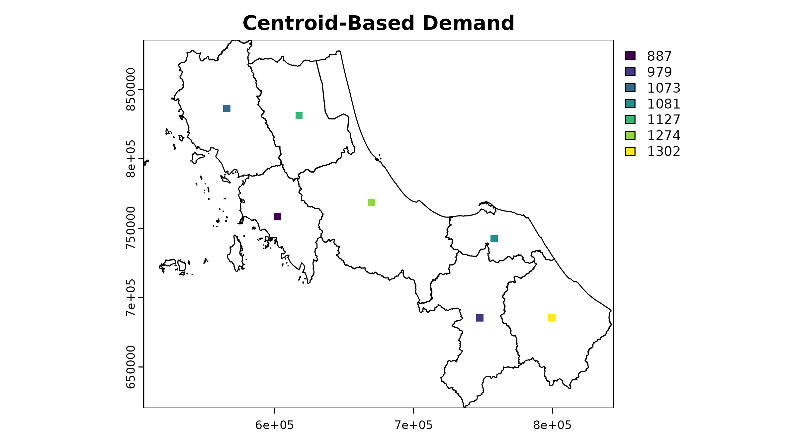
As you can see here, the centroid vector data has been converted into a raster format (despite its weird-looking result). However, this raster can now be used in the accessibility analysis, just like the original population density raster.
| Pros | Cons |
|---|---|
|
|
2. Area-Weighted Approach [developing]
Now, we can really take a choropleth map into analysis. This method assumes cases are uniformly distributed across each district:
# test
case_spatial_spat <- vect(case_spatial)
case_spatial_spat |> expanse()
#> [1] 7741349548 2881574102 4709743120 3860384248 1966320543 4472740197 4487557469
terra::rasterize(case_spatial_spat, template, field = 1) |> plot()
# 1. Calculate case density
case_spatial <- case_spatial |>
mutate(
area_m2 = st_area(case_spatial), # estimate area
case_density = as.numeric(cases / area_m2) # calc density
)
# 2. Rasterize case density
case_density_raster <- terra::rasterize(
vect(case_spatial),
template,
field = "case_density"
)
# 3. Calculate pixel area in square kilometers
pixel_area <- terra::res(template)[1] * terra::res(template)[2]
# 4. Convert density to absolute cases per pixel
case_raster <- case_density_raster * pixel_areaAnd you would have some thing like this:
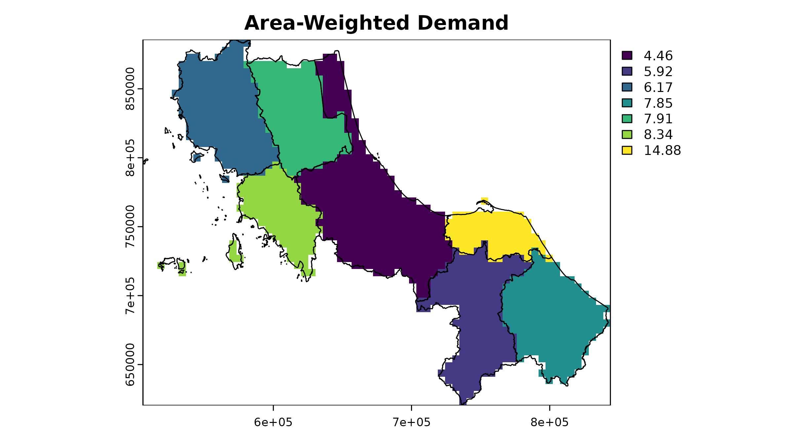
# Extract raster values for each polygon
extracted_cases <- terra::extract(case_raster, vect(case_spatial), fun = sum, na.rm = TRUE)
case_spatial <- case_spatial %>%
mutate(
raster_cases = extracted_cases[, 2] # Extracted values
)
# Compare the result
case_spatial |> st_drop_geometry() |>
select(ADM1_PCODE, cases, raster_cases)
#> ADM1_PCODE cases raster_cases
#> 1 TH90 1274 1261.3804
#> 2 TH91 887 867.4381
#> 3 TH92 1073 1068.1381
#> 4 TH93 1127 1131.1109
#> 5 TH94 1081 1085.9092
#> 6 TH95 979 995.1537
#> 7 TH96 1302 1286.7563
# Due to the demand approximation, the raster-based method may not exactly match the original case counts. The results, though, will geting closer as the resolution increas.es3. Informed Distribution [developing]
This approach uses auxiliary data (like population density) to distribute cases more realistically:
4. Probabilistic Sampling [developing]
For uncertainty analysis, spax provides the sample_pmf() function to generate multiple realizations of demand distributions:
# This advanced approach is covered in detail in the "Probabilistic Accessibility Analysis" vignette (developing)
?sample_pmf # See documentation for detailsThe choice of demand preparation method can significantly impact your accessibility analysis results. Consider your specific context:
- Data availability (Do you have population density data?)
- Scale of analysis (Are districts large enough that distribution matters?)
- Purpose (Is point-based analysis sufficient for your needs?)
- Computational resources (Can you handle higher resolution distributions?) ### Processing Supply Data & Distance Raster
Processing Supply and Distance Data
Supply Data: The Known Part of the Equation
Supply locations are typically the most straightforward component of accessibility analysis - we usually know exactly where facilities are and their capacities. However, there are still important considerations in preparing this data.
# Example of typical supply data structure
head(hc12_hos) |>
select(id, hoslvl, s_doc, s_nurse)
#> Simple feature collection with 6 features and 4 fields
#> Geometry type: POINT
#> Dimension: XY
#> Bounding box: xmin: 659422 ymin: 744135 xmax: 715990.7 ymax: 824148
#> Projected CRS: WGS 84 / UTM zone 47N
#> # A tibble: 6 × 5
#> id hoslvl s_doc s_nurse geometry
#> <chr> <fct> <int> <int> <POINT [m]>
#> 1 c172 3-Regional 522 973 (662036.1 775836.7)
#> 2 c173 2-General 321 706 (672852 789753.3)
#> 3 c174 2-General 67 63 (659422 824148)
#> 4 c175 2-General 81 103 (692195 764766)
#> 5 c176 2-General 175 180 (687203.3 744135)
#> 6 c177 2-General 77 103 (715990.7 752559.6)Supply data typically starts as point locations with attributes (as it’s usually a known part of our equation). Let’s say we have a dataset of hospital capacity in the region, and we geo-located each of them, you might get something like this:
# Dissect the original data
head(hc12_hos)
#> Simple feature collection with 6 features and 10 fields
#> Geometry type: POINT
#> Dimension: XY
#> Bounding box: xmin: 659422 ymin: 744135 xmax: 715990.7 ymax: 824148
#> Projected CRS: WGS 84 / UTM zone 47N
#> # A tibble: 6 × 11
#> id hoslvl bed s_doc s_dent s_nurse s_hv d_pop_moph d_pop_moph_60
#> <chr> <fct> <dbl> <int> <int> <int> <int> <dbl> <dbl>
#> 1 c172 3-Regional 591 522 44 973 0 0 0
#> 2 c173 2-General 508 321 18 706 0 0 0
#> 3 c174 2-General 30 67 6 63 0 0 0
#> 4 c175 2-General 60 81 9 103 0 0 0
#> 5 c176 2-General 90 175 12 180 0 0 0
#> 6 c177 2-General 60 77 9 103 0 0 0
#> # ℹ 2 more variables: d_pop_moph_05 <dbl>, geometry <POINT [m]>
class(hc12_hos)
#> [1] "sf" "tbl_df" "tbl" "data.frame"For use in spax, supply data should be separated
into:
- Spatial locations (for distance calculations)
- Capacity attributes (for accessibility computations)
# Separate spatial and attribute components
supply_attributes <- hc12_hos |>
st_drop_geometry() |>
select(id, s_doc, s_nurse) # Keep only relevant columns
# Visual check of supply distribution
ggplot() +
geom_sf(data = bound1, fill = "grey80") +
geom_sf(data = hc12_hos, aes(size = s_doc, color = hoslvl)) +
scale_size_continuous(name = "Number of Doctors") +
scale_color_viridis_d(name = "Hospital Level", end = 0.5) +
theme_minimal() +
labs(title = "Healthcare Supply Distribution",
subtitle = "Size indicates number of doctors, color shows facility level")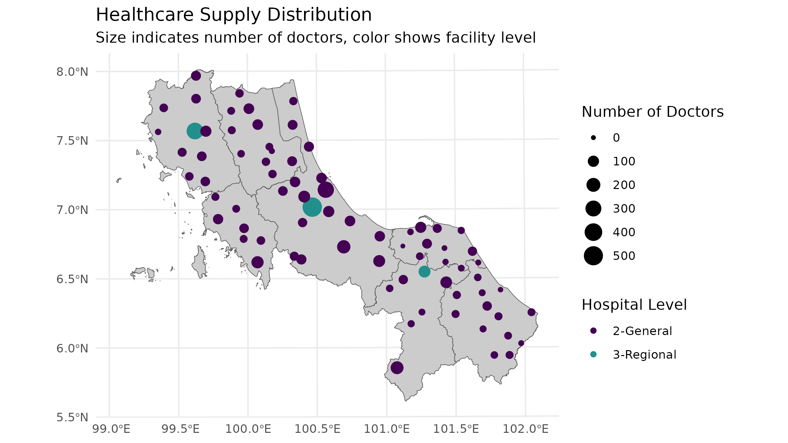
Creating Distance/Travel Time Surfaces
On the other hand, the most complex part of data preparation, in my opinion, is often creating travel time or distance surfaces. You have several options:
1. Euclidean Distance
The simplest approach - straight-line distances:
# Example for one facility using terra
facility_point <- hc12_hos[1,]
template_rast <- rast(u5pd) # Use population raster as template
# Calculate Euclidean distance (in meters since our CRS is projected)
euclidean_dist <- terra::distance(
template_rast,
vect(facility_point)
) |> crop(vect(bound0), mask = TRUE)
#> |---------|---------|---------|---------|=========================================
# Plot the Euclidean distance
plot(euclidean_dist / 1000, # Convert to kilometers
main = "Euclidean Distance (km)")
plot(vect(facility_point), add = TRUE, col = "red", pch = 16)
plot(vect(bound0), add = TRUE)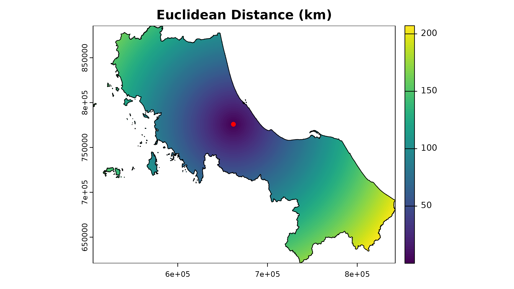
And then you can loop over all facilities to calculate the distance raster for each facility.
2. Travel Time Isochrones
Another way to go is to create travel time isochrones, which
represent areas reachable from a location within a given time threshold.
This package did not provide a function to generate isochrones, but we
can use the osrm package to calculate travel times
rings around each supply location.
# Example: Calculate isochrones for the first hospital
# Since the dataset I've prepared is in a planar projection, we need to transform it to WGS84 (EPSG:4326) for routing services
(example_hos1 <- hc12_hos[1, ] |> # Select the first hospital
st_transform(4326) |> # Transform to WGS84 (geodesic projection)
st_coordinates() |> # Extract coordinates
as.numeric()) # Convert to numeric
#> [1] 100.466936 7.016594
# Calculate isochrones
example_isochrone <- osrmIsochrone(
loc = example_hos1, # Example coordinates
breaks = c(15, 30, 45, 60), # 15-minute intervals
res = 30
)
# change crs back
(example_isochrone <- st_transform(example_isochrone, st_crs(bound0)))
#> Simple feature collection with 4 features and 3 fields
#> Geometry type: MULTIPOLYGON
#> Dimension: XY
#> Bounding box: xmin: 611291.2 ymin: 699250.9 xmax: 714914.9 ymax: 835552.2
#> Projected CRS: WGS 84 / UTM zone 47N
#> id isomin isomax geometry
#> 1 1 0 15 MULTIPOLYGON (((666119.5 78...
#> 2 2 15 30 MULTIPOLYGON (((674296.6 79...
#> 3 3 30 45 MULTIPOLYGON (((674252.3 80...
#> 4 4 45 60 MULTIPOLYGON (((616774.1 81...
par(mfrow = c(1, 2))
plot(example_isochrone[, "isomax"], main = "Travel Time Isochrone for Hospital C1")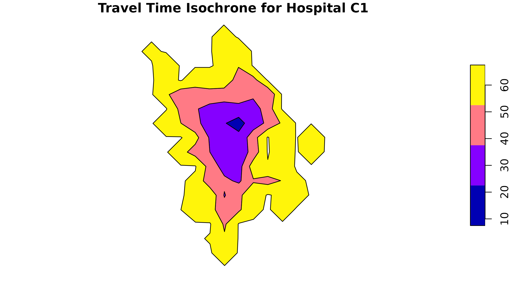
plot(example_isochrone[3, "isomax"], main = "Travel Time Isochrone ring for Hospital C1 (45 mins)")As you can see, osrmIsochrone calculates the area reachable within
each time threshold for the first hospital (C1) in 15-minute intervals
up to 60 minutes as distinct ring-shaped vectors. If you take on a
vector-based approach, you can use functions like
st_contain() to determine the population within each
isochrone ring. But in our raster-centric package, we’ll rasterize these
isochrones for further analysis.
# Create a iso_mean column, and id
example_isochrone <- example_isochrone |>
mutate(
iso_mean = (isomin + isomax) / 2,
location_id = hc12_hos[1, ]$id # actually dont need it here
)
# Convert isochrones to raster format
example_raster <- terra::rasterize(
x = example_isochrone,
y = template_rast,
field = "iso_mean", # Fill the raster with the isomax values
background = NA,
fun = "sum",
by = "location_id") |>
crop(vect(bound0), mask = TRUE)
# Plot
plot(example_raster, main = "Travel Time Isochrone for Hospital C1")
plot(vect(bound0), add = TRUE)
plot(vect(hc12_hos[1, ]), add = TRUE, col = "red", pch = 16)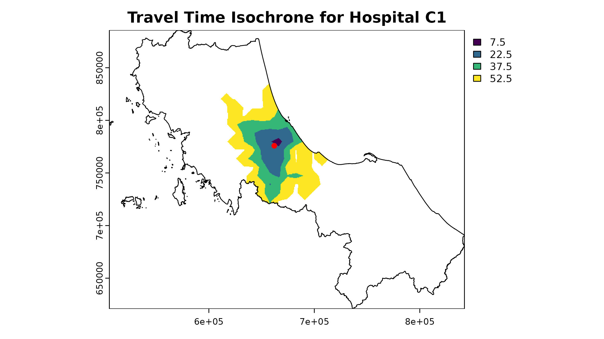
To analyze all hospitals, we can iterate through each facility and compute their isochrones. By default, the osrmIsochrone function uses the OSRM demo server to perform these calculations. However, relying on the demo server is not recommended for large datasets or repeated analyses due to usage limits and ethical considerations. Instead, it’s advisable to set up your own OSRM server. This vignette does not cover the server setup process.
# Example of looping over all hospitals to calculate isochrones
# Note: This code is for illustration only and may not run due to API limitations
# Initialize a list to store isochrones
isochrones <- list(rep(NA, nrow(hc12_hos)))
# Extract coordinates
hos_coords <- hc12_hos |>
st_transform(4326) |> # only if the data is in planar projection
st_coordinates()
# Loop over each hospital - lapply
isochrones <- lapply(1:nrow(hc12_hos), function(i) {
# Calculate isochrone
osrmIsochrone(
loc = hos_coords[i, ],
breaks = c(15, 30, 45, 60),
res = 30
)
})
# Then proceed to rastarization ...Service Provider Options
OSRM (Open Source Routing Machine)
- Free and open source
- Requires setting up your own server for large analyses
- Good for road-based travel times (you can actually use it for other traveling modes, but that requires more setup)
HERE, Google Maps, or other APIs
- More accurate traffic data
- Cost associated with usage
- May have usage limits
Custom cost surfaces (I have no idea how to do this, lol)
- Can incorporate terrain, land use
- Requires more GIS expertise
- Good for non-road-based accessibility
Memory Considerations
Travel time surfaces often dominate memory usage. For n facilities and a raster of m cells, you need space for n × m values:
# Calculate memory requirements
cells_per_raster <- ncell(rast(u5pd))
n_facilities <- nrow(hc12_hos)
bytes_per_value <- 8 # Double precision float
total_mb <- cells_per_raster * n_facilities * bytes_per_value / 1024^2
cat(sprintf("Memory required for ~520*520 m^2 resolution: %.1f MB\n", total_mb))
#> Memory required for ~520*520 m^2 resolution: 193.5 MB
# Option: Reduce resolution for initial analysis
cells_per_raster_2 <- ncell(rast(aggregate(u5pd, fact = 2)))
total_mb_2 <- cells_per_raster_2 * n_facilities * bytes_per_value / 1024^2
cat(sprintf("Memory required for ~1040*1040 m^2 resolution: %.1f MB\n", total_mb_2))
#> Memory required for ~1040*1040 m^2 resolution: 48.5 MBTips for managing memory:
- Start with lower resolution for testing
- Consider using chunks for large spatial datasets
- Clean up unused objects during processing
Validating Your Data: Essential Checks Before Analysis
Before running any accessibility analysis, it’s crucial to validate your prepared data. Here’s a systematic approach to validation (some of which already implemented in the package:) :
1. Spatial Alignment
All raster inputs must align perfectly - same extent, resolution, and projection:
# Example:
# You might want to create function to summarize raster properties
summarize_raster <- function(r, name) {
tibble(
Dataset = name,
Resolution = paste(round(res(r),2) , collapse = " x "),
Extent = paste(round(as.vector(ext(r)), 2), collapse = ", "),
CRS = crs(r, proj = TRUE)
)
}
# Compare properties of key rasters
raster_props <- bind_rows(
summarize_raster(rast(u5pd), "Population"),
summarize_raster(rast(hos_iscr), "Travel Time")
)
raster_props
#> # A tibble: 2 × 4
#> Dataset Resolution Extent CRS
#> <chr> <chr> <chr> <chr>
#> 1 Population 520.4 x 520.4 505646.53, 842347.77, 620843.72, 885729.24 +proj=ut…
#> 2 Travel Time 520.4 x 520.4 505646.53, 842347.77, 620843.72, 885729.24 +proj=ut…
# Visual check for alignment
plot(rast(u5pd), main = "Spatial Alignment Check")
plot(rast(hos_iscr)[[1]], add = TRUE, alpha = 0.5)
plot(vect(bound1), add = TRUE)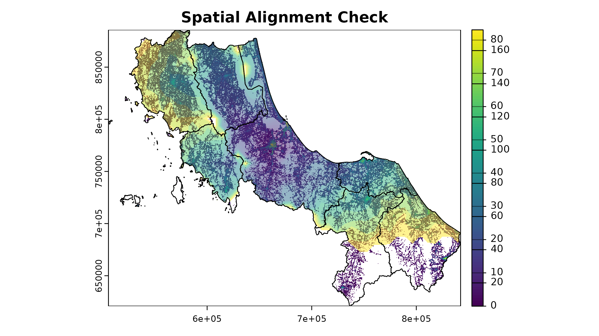
2. Value Range Validation
Check for reasonable values in your input data:
# Check population density range
summary(u5pd)
#> tha_children_under_five_2020
#> Min. 0.000000e+00
#> 1st Qu. 1.385807e+00
#> Median 3.497750e+00
#> 3rd Qu. 7.571418e+00
#> Max. 8.307421e+01
#> NA's 2.781020e+05
summary(hos_iscr[[1:10]]) # Check a few travel time rasters
#> Warning in .local(object, ...): summary is an estimate based on a sample of 1e+05 cells (30.37% of all cells)
#> c172 c173 c174 c175 c176 c177 c178 c179
#> Min. 6.0 3.0 3.5 4.0 8.5 11.0 5.0 7.5
#> 1st Qu. 67.5 67.5 82.5 67.5 67.5 67.5 67.5 97.5
#> Median 97.5 112.5 127.5 112.5 112.5 112.5 112.5 127.5
#> 3rd Qu. 142.5 142.5 157.5 142.5 142.5 142.5 157.5 157.5
#> Max. 172.5 172.5 172.5 172.5 172.5 172.5 172.5 172.5
#> NA's 232772.0 232555.0 241578.0 226680.0 231076.0 235489.0 241789.0 246926.0
#> c180 c181
#> Min. 5.0 8.5
#> 1st Qu. 97.5 67.5
#> Median 127.5 97.5
#> 3rd Qu. 157.5 127.5
#> Max. 172.5 172.5
#> NA's 247713.0 236889.03. Missing Value Analysis
Understand where and why you have NA values; note that not all NAs are bad:
# Function to analyze NA patterns within boundary
analyze_nas <- function(r, name, bound = bound0) {
# Create mask from boundary
mask <- terra::rasterize(bound, r)
# Count cells only within boundary
cells_in_boundary <- global(!is.na(mask), "sum")$sum
nas_in_boundary <- global(is.na(r) & !is.na(mask), "sum")$sum
cat(sprintf("%s:\n", name),
sprintf(" NA cells within boundary: %d (%.1f%% of study area)\n",
nas_in_boundary,
100 * nas_in_boundary/cells_in_boundary))
# Visualize NA pattern
na_map <- (is.na(r) & !is.na(mask)) |> crop(bound, mask = T)
plot(na_map, main = paste(name, "- NAs within Study Area"),
col = c("grey80", "red"),
legend = FALSE)
plot(vect(bound1), add = TRUE)
legend("bottomright",
legend = c("Data present", "NA"),
fill = c("grey80", "red"),
bty = "n")
}
# Check NA patterns in key datasets
par(mfrow = c(1, 2))
analyze_nas(rast(u5pd), "Pop")
#> Pop:
#> NA cells within boundary: 60551 (54.4% of study area)
analyze_nas(rast(hos_iscr)[[1]], "Time from 1st Fac")
#> Time from 1st Fac:
#> NA cells within boundary: 16841 (15.1% of study area)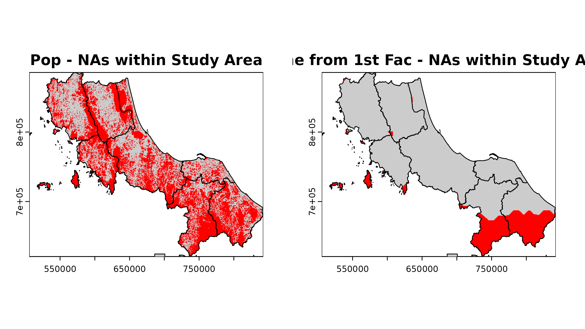